Marvel Adventures Spider-Man Vol 2 (2010 - 2012)
| Comic Book | Release Date | Cover |
|---|---|---|
| Marvel Adventures Spider-Man Vol 2 #1 |  | |
| Marvel Adventures Spider-Man Vol 2 #2 | 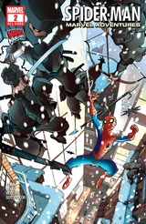 | |
| Marvel Adventures Spider-Man Vol 2 #3 | 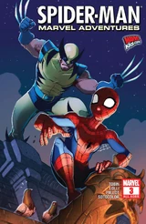 | |
| Marvel Adventures Spider-Man Vol 2 #4 | 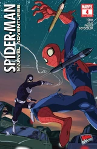 | |
| Marvel Adventures Spider-Man Vol 2 #5 | 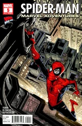 | |
| Marvel Adventures Spider-Man Vol 2 #6 | 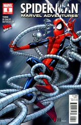 | |
| Marvel Adventures Spider-Man Vol 2 #7 | 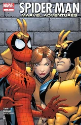 | |
| Marvel Adventures Spider-Man Vol 2 #8 | 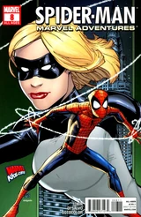 | |
| Marvel Adventures Spider-Man Vol 2 #9 | 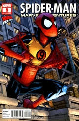 | |
| Marvel Adventures Spider-Man Vol 2 #10 | 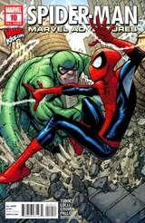 | |
| Marvel Adventures Spider-Man Vol 2 #11 | 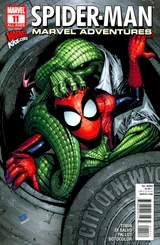 | |
| Marvel Adventures Spider-Man Vol 2 #12 | 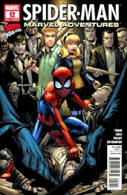 | |
| Marvel Adventures Spider-Man Vol 2 #13 The Raptor of the Baskervilles | 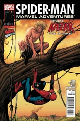 | |
| Marvel Adventures Spider-Man Vol 2 #14 The Illusionist | 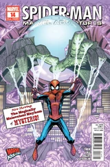 | |
| Marvel Adventures Spider-Man Vol 2 #15 Council of Doom! | 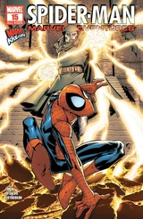 | |
| Marvel Adventures Spider-Man Vol 2 #16 Magically Suspicious | 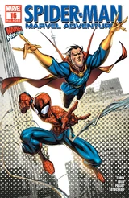 | |
| Marvel Adventures Spider-Man Vol 2 #17 Six-To-One-Shot! | 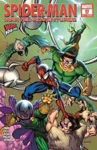 | |
| Marvel Adventures Spider-Man Vol 2 #18 Goblin Ball | 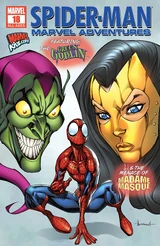 | |
| Marvel Adventures Spider-Man Vol 2 #19 Going Cosmic! | 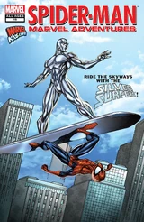 | |
| Marvel Adventures Spider-Man Vol 2 #20 The Sandstorm | 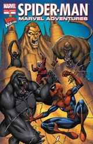 | |
| Marvel Adventures Spider-Man Vol 2 #21 Gods and Mutants! | 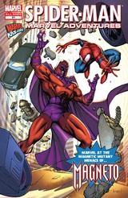 | |
| Marvel Adventures Spider-Man Vol 2 #22 Fight Club | 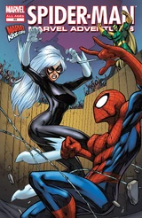 | |
| Marvel Adventures Spider-Man Vol 2 #23 There Can Be Only One! | 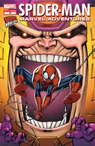 | |
| Marvel Adventures Spider-Man Vol 2 #24 If You Can't Beam 'Em! | 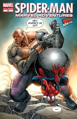 |